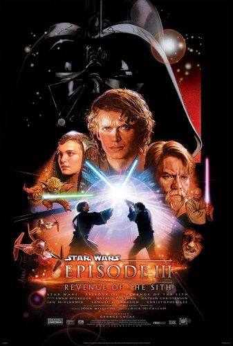
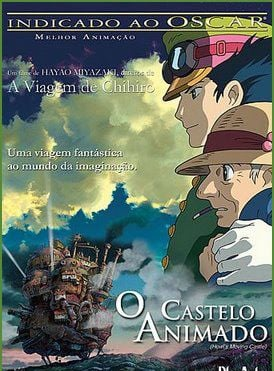
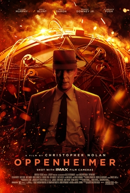
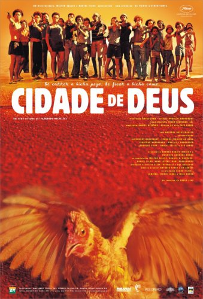
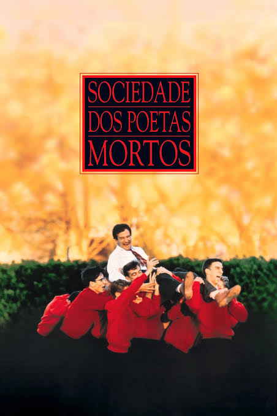

Em Star Wars: Episódio III – A Vingança dos Sith (2005), as Guerras Clônicas chegam ao fim. O Jedi Anakin Skywalker é seduzido pelo lado sombrio da Força pelo Chanceler Palpatine, transformando-se em Darth Vader, enquanto a Ordem Jedi é destruída e o Império Galáctico nasce das cinzas da República.

O Castelo Animado acompanha Sophie, uma jovem de 18 anos que trabalha na chapelaria do pai. Ela sofre uma maldição da Bruxa das Terras Desoladas que a transforma em uma senhora de 90 anos. Para quebrar o feitiço, Sophie busca refúgio no misterioso castelo ambulante do mago Hauru, vivendo uma jornada mágica em meio a uma guerra.

Oppenheimer acompanha a vida de J. Robert Oppenheimer, o físico americano que liderou o Projeto Manhattan durante a Segunda Guerra Mundial. A trama mostra a criação da primeira bomba atômica, os dilemas morais da ciência e os julgamentos políticos enfrentados por ele durante a Guerra Fria.

Cidade de Deus (2002), dirigido por Fernando Meirelles e Kátia Lund, narra a evolução do crime organizado em uma favela do Rio de Janeiro dos anos 1960 ao início dos anos 1980. Sob a ótica do narrador Buscapé, a trama opõe seu destino pacífico como fotógrafo ao de seu conterrâneo Dadinho, que se torna o implacável chefão do tráfico, Zé Pequeno.

O filme Sociedade dos Poetas Mortos (1989) se passa em 1959 na Academia Welton, uma escola tradicional guiada por rigor, disciplina e tradição. O inspirador professor John Keating chega para mudar a rotina dos alunos com o lema Carpe Diem (aproveite o dia), despertando neles o amor pela poesia e a coragem de buscar seus próprios sonhos contra a vontade familiar.